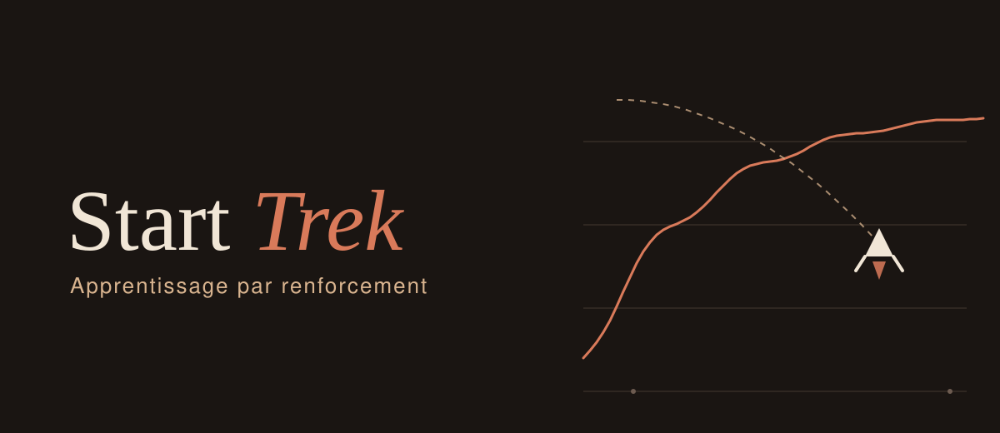
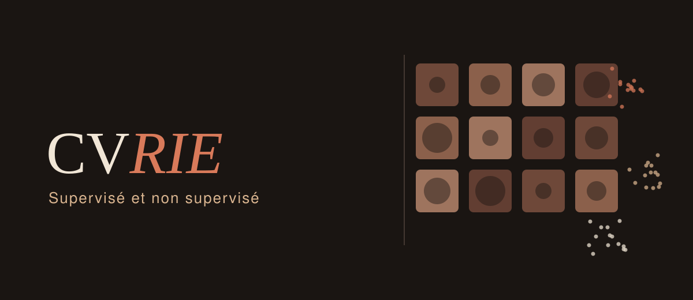
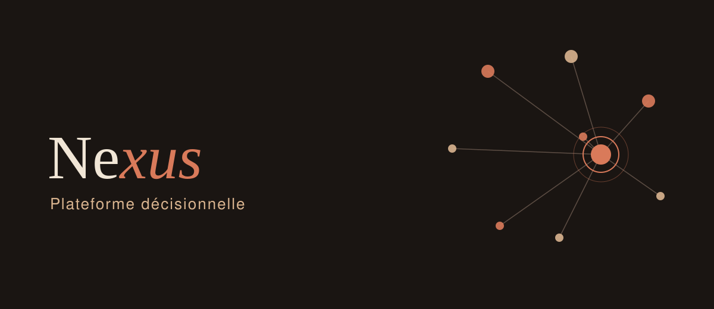
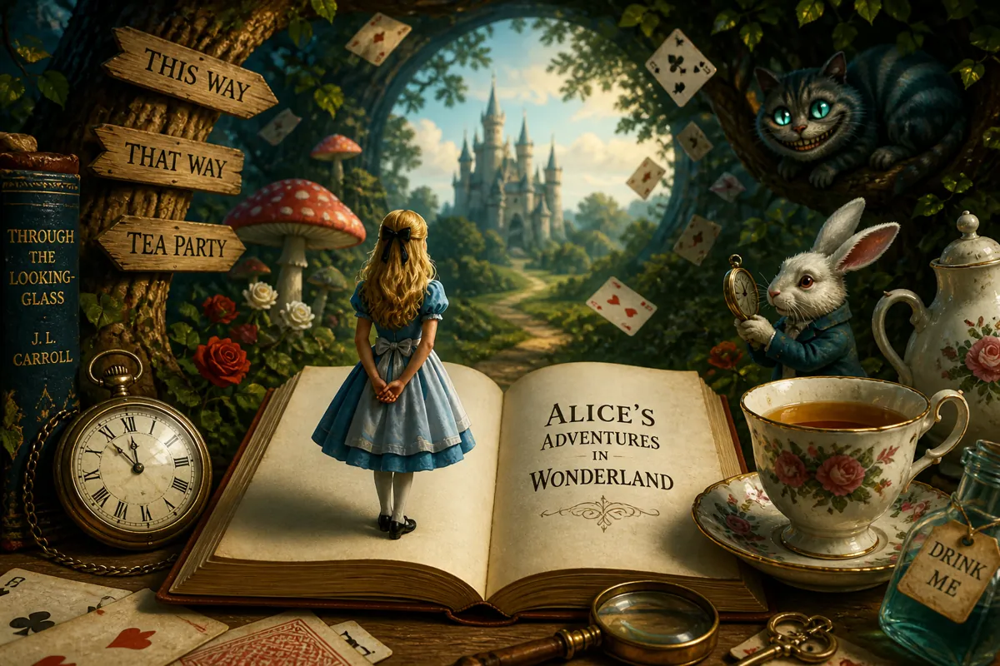
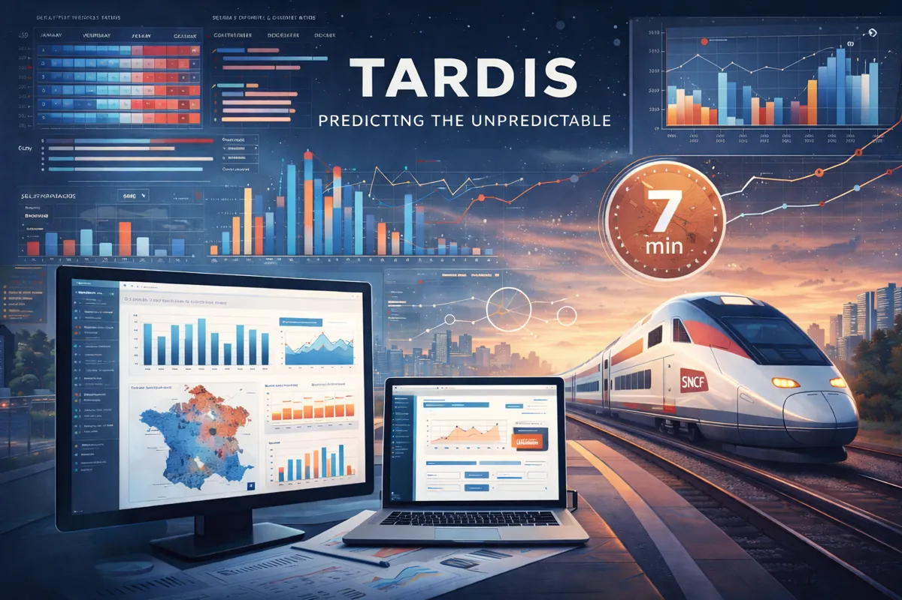
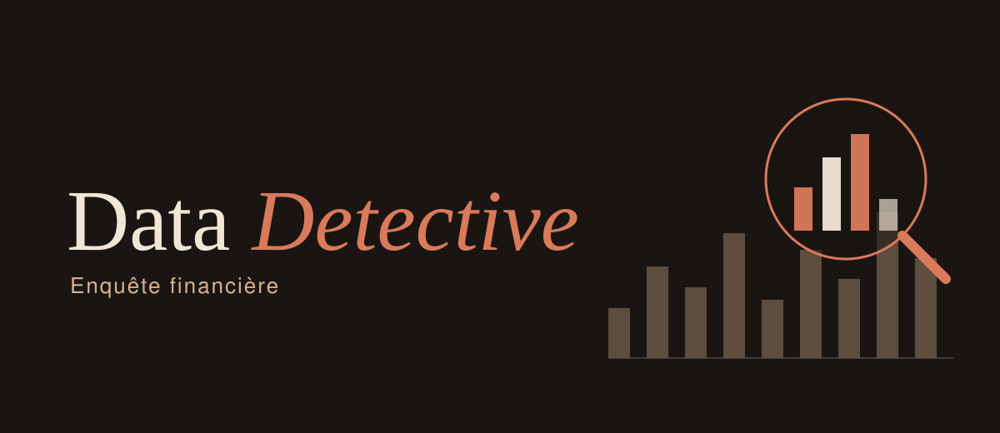
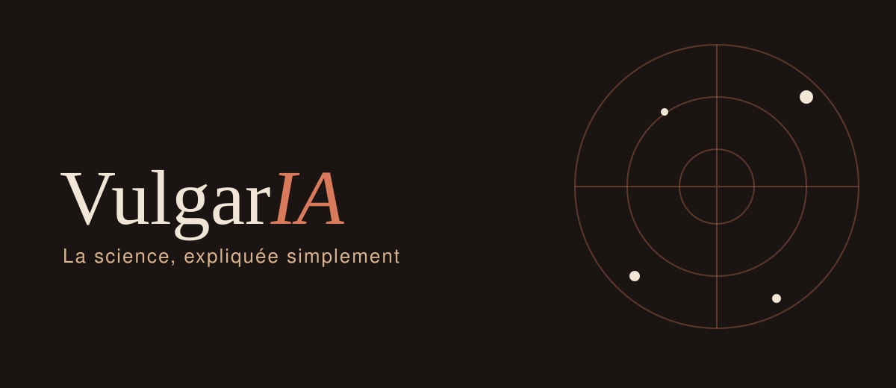
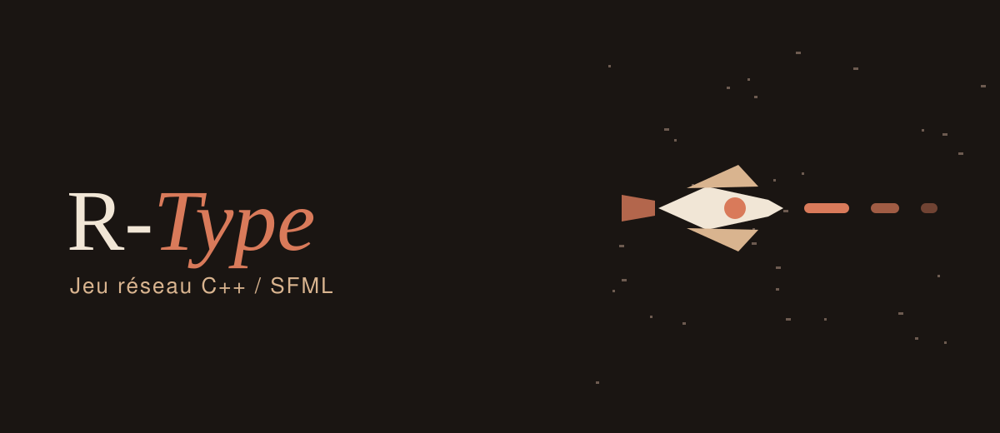
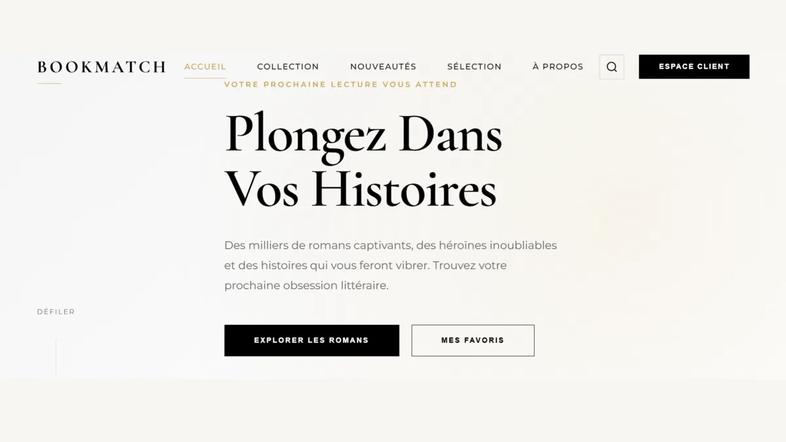

Analyser
Explorer, nettoyer et interroger des jeux de données réels pour en tirer ce qui compte.
Data & IA · Epitech Bordeaux
J'analyse des données, j'entraîne des modèles et je soigne la façon dont les résultats sont présentés. Formée à Epitech Bordeaux, après un stage en data management et pilotage de la performance.
Explorer, nettoyer et interroger des jeux de données réels pour en tirer ce qui compte.
Classification, apprentissage par renforcement, traitement du langage : entraîner des modèles et mesurer honnêtement leurs résultats.
Mon atout design : des visualisations et des interfaces qui rendent les résultats compréhensibles.
Je suis une personne calme et persévérante, toujours soucieuse de m'améliorer. J'aime apprendre à mon rythme, découvrir de nouvelles idées et donner vie à des projets qui reflètent qui je suis.
Je me forme à la data et à l'intelligence artificielle à Epitech Bordeaux : analyse de données, machine learning, apprentissage par renforcement, traitement du langage. Ma sensibilité au design me sert à rendre les résultats compréhensibles, dans une visualisation comme dans une interface.
Avec mon équipe, nous avons remporté le hackathon de Keolis Bordeaux Métropole Mobilités avec Angle Gardien, un projecteur qui matérialise au sol les angles morts des bus.
Stage au Sanctuaire Notre-Dame du Laus : amélioration du traitement et de l'exploitation des données, rédaction de la documentation technique des méthodes d'analyse.
Formation par projets : machine learning, apprentissage par renforcement, traitement du langage, développement et travail en équipe.
"Comprendre les données avant de les faire parler."
Explorer un jeu de données, le nettoyer, traiter les valeurs manquantes et en tirer des indicateurs utiles. C'est ce que j'ai pratiqué en stage, en data management et pilotage de la performance.
"Un modèle ne vaut que par la façon dont on le mesure."
Classification, prédiction et apprentissage par renforcement avec scikit-learn : préparation des features, entraînement, évaluation honnête des résultats.
"Transformer du texte en information exploitable."
Analyse de corpus (diversité lexicale, topics, entités, résumé, similarité), clustering de textes et prompt engineering sur modèles locaux.
"Un résultat mal présenté est un résultat perdu."
Mon atout : des visualisations et des interfaces soignées pour rendre les analyses compréhensibles par tous, du prototype Figma au frontend déployé.

Agents entraînés par renforcement : Q-learning sur l'environnement Taxi en notebook, puis Lunar Lander. J'ai pris en charge la partie PPO, mon binôme le DQN.

Projet en deux volets : classification supervisée d'images de lésions cutanées (HAM10000, Harvard Dataverse) et clustering non supervisé de témoignages de patients. Projet de groupe avec soutenance.

Plateforme d'aide à la décision construite phase par phase : backend FastAPI, interface React et TypeScript, et une couche d'analyse qui transforme les données en recommandations.

Moteur NLP en CLI pour analyser des livres : diversité lexicale, topics, entités, résumé et similarité. Génération automatique de "book cards" synthétiques pour résumer efficacement chaque ouvrage.

Analyse et prédiction sur des séries temporelles : préparation des données, modélisation et visualisation des tendances.

Application d'investigation où l'utilisateur incarne un analyste et retrouve 47,8 M€ non retraçables dans un jeu de données. La solution est démontrable par l'analyse, jamais affichée dans l'interface.

Plateforme de vulgarisation scientifique réalisée en équipe. J'ai réécrit le chatbot en Node.js avec une approche TF-IDF, développé le frontend multi-pages, intégré l'internationalisation et assuré le déploiement Docker.
Modèle de machine learning permettant de prédire la survie des passagers du Titanic à partir de données démographiques. Score obtenu : 0.77511 sur Kaggle.
Chatbot intelligent qui organise des voyages selon budget, durée et envies. Génère destinations, activités et planning personnalisé adapté au profil utilisateur.

Shoot'em up multijoueur en C++ avec SFML, développé en équipe. Je suis responsable du client graphique, mes coéquipiers du serveur et du protocole réseau.

Un site permettant de rechercher et découvrir des livres grâce à une API, avec affichage des informations principales.
Mes compétences, chacune reliée à un projet où je l'ai mise en pratique.
Exploration, nettoyage, agrégations, préparation des données
Classification, régression, évaluation de modèles
Tokenisation, entités nommées, topics, similarité, TF-IDF
Graphiques et restitution claire des résultats
Structure sémantique, accessibilité, SEO, formulaires avancés
Flexbox, Grid, animations, transitions, design responsive
DOM manipulation, événements, fetch API, ES6+
Algorithmes, structures de données, scripts
Versioning, branches, pull requests, collaboration
Extensions, snippets, debugging, personnalisation
Prototypage, design systems, collaboration design
Commandes de base, navigation, scripts shell
Interfaces utilisateur, expérience utilisateur, wireframes
Mobile-first, media queries, adaptabilité tous écrans
Maquettes interactives, parcours utilisateur, tests
Choix de palette, cohérence graphique, hiérarchie visuelle
Téléchargez mon CV pour découvrir mon parcours académique et mes expériences.
Télécharger mon CVVous cherchez un profil data avec un œil pour la restitution ? Écrivez-moi, je réponds rapidement.
alebapaulina89@gmail.com
Sur demande
Bordeaux
Étudiante à Epitech Bordeaux
Je vous répondrai au plus vite.